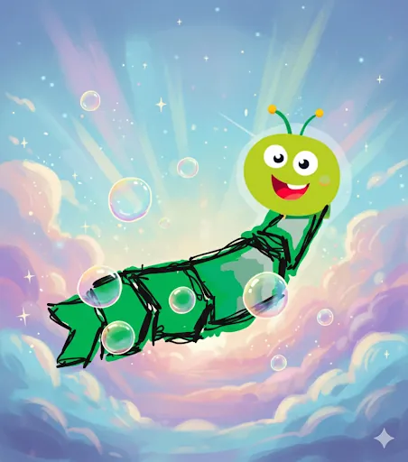

Hören und sehen
Was im Ohr bleibt, bleibt auch im Kopf.
Lieder, Kurzvideos und ein Podcast rund um Prozesse. Jeder Titel öffnet sich bei Suno, YouTube oder Spotify. Auf dieser Seite selbst wird nichts von dort geladen.

Mit KI erstelltAlle Lieder und Videos
- Plötzlich Prozesse am HalsLied auf Suno · Zum Einstieg→
- Der ProzesswurmLied auf Suno · Prozesswurm und Doktor Kuddelmuddel→
- Der Herr des WirrwarrsLied auf Suno · Prozesswurm und Doktor Kuddelmuddel→
- Prozesswurm und Doktor KuddelmuddelLied auf Suno · Prozesswurm und Doktor Kuddelmuddel→
- Doktor Kuddelmuddels Chaos-KabinettLied auf Suno · Prozesswurm und Doktor Kuddelmuddel→
- Kuddelmuddels EndstationLied auf Suno · Prozesswurm und Doktor Kuddelmuddel→
- Der Flow-Effekt (Wurmkur fürs Business)Lied auf Suno · Prozesswurm und Doktor Kuddelmuddel→
- Die 5 Reiter der IneffizienzLied auf Suno · Lean→
- Prozesswurm AlarmLied auf Suno · Prozesswurm und Doktor Kuddelmuddel→
- Wurm Wurm WurmLied auf Suno · Prozesswurm und Doktor Kuddelmuddel→
- Wir graben uns durch Komplexität, bis Klarheit entsteht.Lied auf Suno · Prozesswurm und Doktor Kuddelmuddel→
- Chaos konformLied auf Suno · Prozesswurm und Doktor Kuddelmuddel→
- Input, Output, BAM!Lied auf Suno · Grundlagen→
- Das WAS und WARUM, das WIE und WOMITLied auf Suno · Grundlagen→
- Wer hat den Hut auf?Lied auf Suno · Grundlagen→
- Der Blick von obenLied auf Suno · Grundlagen→
- Prozesswurm-TurmLied auf Suno · Grundlagen→
- Vom Papier zum MenschenLied auf Suno · Grundlagen→
- Kopplungs-OrganismusLied auf Suno · Grundlagen→
- Thermomixwurm-PrinzipLied auf Suno · Grundlagen→
- Grüner ProzesswurmLied auf Suno · Grundlagen→
- Die LernwerkstattLied auf Suno · Grundlagen→
- Synapsen-BohrerLied auf Suno · Grundlagen→
- West Coast ProcessLied auf Suno · Grundlagen→
- System-FlowLied auf Suno · Werkzeugkoffer→
- Die VisiteLied auf Suno · Werkzeugkoffer→
- ModellierungswahnLied auf Suno · Werkzeugkoffer→
- Prozess PartyLied auf Suno · Werkzeugkoffer→
- OrdnerdunstLied auf Suno · Lean→
- Vom Chaos-König zum Lean MasterLied auf Suno · Lean→
- Ein Ding nach dem andernLied auf Suno · Veränderung→
- ReVibe – Schritt für SchrittLied auf Suno · Veränderung→
- Der große ResetLied auf Suno · Veränderung→
- Gegen den StromLied auf Suno · Veränderung→
- Agenten am WerkLied auf Suno · KI im Prozessmanagement→
- Vom Suchen zum FindenLied auf Suno · KI im Prozessmanagement→
- Frag den Prozesswurm !Lied auf Suno · KI im Prozessmanagement→
- Zwei Welten, ein WegLied auf Suno · KI im Prozessmanagement→
- Das Echo des Master-PromptsLied auf Suno · KI im Prozessmanagement→
- Das Wurm-Team (Prozess & Recht)Lied auf Suno · KI im Prozessmanagement→
- Bits und BytesLied auf Suno · KI im Prozessmanagement→
- Hör dem Prozesswurm mal zuLied auf Suno · KI im Prozessmanagement→
- Im Takt der MaschineLied auf Suno · KI im Prozessmanagement→
- Code des ProzesswurmsLied auf Suno · KI im Prozessmanagement→
- Der 1% WurmLied auf Suno · KI im Prozessmanagement→
- BlaupauseLied auf Suno · KI im Prozessmanagement→
- Sommer-Agents-VibesLied auf Suno · KI im Prozessmanagement→
- Der Maschinenraum BerlinLied auf Suno · KI im Prozessmanagement→
- Wir bauen Leitplanken, keine Wände!Lied auf Suno · Strategie→
- WM Prozesswurm Hymne 2026: „Takt des Triumphs“Lied auf Suno · Zum Mitwippen→
- Gründlich !Lied auf Suno · Zum Mitwippen→
- Boombastic ProcessLied auf Suno · Zum Mitwippen→
- Sexy ProcessLied auf Suno · Zum Mitwippen→
- Der RucksackLied auf Suno · Zum Mitwippen→
- Carter In The CodeLied auf Suno · Zum Mitwippen→
- Neon Brass ProcessLied auf Suno · Zum Mitwippen→
- Prozesswurm On The LooseLied auf Suno · Zum Mitwippen→
- Keep it Low, keep it SlowLied auf Suno · Zum Mitwippen→
- Wir stolpern durchs LebenLied auf Suno · Zum Mitwippen→
- Treibhäuser der ZukunftLied auf Suno · Zum Mitwippen→
- Flow im AbendrotLied auf Suno · Zum Mitwippen→
- Raus aus dem WurmlochLied auf Suno · Zum Mitwippen→
- Haus am SeeLied auf Suno · Zum Mitwippen→
- Prozesswurm OstereierLied auf Suno · Zum Mitwippen→
- Der Prozesswurm-Groove (Heidelberg Flow)Lied auf Suno · Zum Mitwippen→
- Burn the FlowchartLied auf Suno · Zum Mitwippen→
- Rhythm of the FlowLied auf Suno · Zum Mitwippen→
- Im Rhythmus der LogikLied auf Suno · Zum Mitwippen→
- Raus aus der Röhre (Der Fokus-Wurm)Lied auf Suno · Zum Mitwippen→
- Der Prozesswurm – das LiedKurzvideo auf YouTube · Prozesswurm und Doktor Kuddelmuddel→
- Der Herr des Wirrwarrs – Doktor Kuddelmuddels LiedKurzvideo auf YouTube · Prozesswurm und Doktor Kuddelmuddel→
- Kuddelmuddels Endstation – das LiedKurzvideo auf YouTube · Prozesswurm und Doktor Kuddelmuddel→
- Prozesswurm gegen Doktor Kuddelmuddel: Ordnung schaffenVideo auf YouTube · Prozesswurm und Doktor Kuddelmuddel→
- Die Lernwerkstatt: Graben bis KlarheitKurzvideo auf YouTube · Zum Einstieg→
- Input, Output, BAM! – das LiedKurzvideo auf YouTube · Grundlagen→
- Das WAS und WARUM, das WIE und WOMITKurzvideo auf YouTube · Grundlagen→
- Vom Papier zum MenschenKurzvideo auf YouTube · Grundlagen→
- Frag nach dem Warum: Wer? Wie? Wann? Wo?Kurzvideo auf YouTube · Grundlagen→
- Puzzleteile ordnen: der Prozesswurm schafft StrukturKurzvideo auf YouTube · Grundlagen→
- Die Visite: Es geht um den Weg, nicht ums TempoKurzvideo auf YouTube · Werkzeugkoffer→
- Der große Reset – Lied über VeränderungKurzvideo auf YouTube · Veränderung→
- Der Prozesswurm räumt auf: Ordnung im PostfachKurzvideo auf YouTube · KI im Prozessmanagement→
- Agenten am Werk – das LiedKurzvideo auf YouTube · KI im Prozessmanagement→
- Hör dem Prozesswurm mal zu – das LiedKurzvideo auf YouTube · KI im Prozessmanagement→
- Code des Prozesswurms – das LiedKurzvideo auf YouTube · KI im Prozessmanagement→
- Im Takt der Maschine – das LiedKurzvideo auf YouTube · KI im Prozessmanagement→
- Der 1% Wurm – das LiedKurzvideo auf YouTube · KI im Prozessmanagement→
- Sommer-Agents-Vibes – das LiedKurzvideo auf YouTube · Zum Mitwippen→
- Im Rhythmus der Logik – das LiedKurzvideo auf YouTube · Zum Mitwippen→
- Raus aus der Röhre (Der Fokus-Wurm) – das LiedKurzvideo auf YouTube · Zum Mitwippen→
- Die Geschichte: Doktor Kuddelmuddel gegen den ProzesswurmKurzvideo auf YouTube · Prozesswurm und Doktor Kuddelmuddel→
- Kuddelmuddel im MontagswahnsinnKurzvideo auf YouTube · Prozesswurm und Doktor Kuddelmuddel→
- Der Prozesswurm sagt DankeVideo auf YouTube · Prozesswurm und Doktor Kuddelmuddel→
- Chaos gegen Ordnung: die Kraft des ProzesswurmsKurzvideo auf YouTube · Grundlagen→
- Grundlagen ProzessmanagementVideo auf YouTube · Grundlagen→
- Elemente eines ProzessablaufsVideo auf YouTube · Grundlagen→
- Vom Brot zum Sandwich: so funktioniert jeder ProzessKurzvideo auf YouTube · Grundlagen→
- Wer tut was? Klare RollenverteilungKurzvideo auf YouTube · Grundlagen→
- Brennball, Ping Pong und die 51-Prozent-VerantwortungKurzvideo auf YouTube · Grundlagen→
- Sofort? Planen? Löschen? Der Prozesswurm sortiertKurzvideo auf YouTube · Grundlagen→
- Wichtig oder dringend?Kurzvideo auf YouTube · Grundlagen→
- Verlaufen im Prozess-Dschungel?Kurzvideo auf YouTube · Grundlagen→
- Standardisierung einführen: immer gleich gutKurzvideo auf YouTube · Grundlagen→
- Gute Prozesse fühlen sich an wie eine UmarmungKurzvideo auf YouTube · Grundlagen→
- Chaos-Alarm im BüroKurzvideo auf YouTube · Grundlagen→
- Wir retten deine toten ProzesseKurzvideo auf YouTube · Grundlagen→
- Wirklich produktiv oder nur beschäftigt?Video auf YouTube · Grundlagen→
- Silodenken war gestern: der Prozesswurm baut BrückenKurzvideo auf YouTube · Grundlagen→
- Wir finden jede Lücke und schließen sieKurzvideo auf YouTube · Grundlagen→
- WM-Hymne 2026: Takt des TriumphsKurzvideo auf YouTube · Grundlagen→
- Doppelarbeit adeKurzvideo auf YouTube · Grundlagen→
- Prozesswurm-Impuls: dein täglicher TippKurzvideo auf YouTube · Grundlagen→
- Küchenhelfer ProzesswurmKurzvideo auf YouTube · Grundlagen→
- Planen, Machen, Besser machenKurzvideo auf YouTube · Werkzeugkoffer→
- Kenne deine Kunden: der Kollege ist auch KundeKurzvideo auf YouTube · Werkzeugkoffer→
- Prozessziele setzenVideo auf YouTube · Werkzeugkoffer→
- Misst du das Richtige? KennzahlenKurzvideo auf YouTube · Werkzeugkoffer→
- Prozesse modellieren und dokumentierenVideo auf YouTube · Werkzeugkoffer→
- Prozess-Detektiv im EinsatzKurzvideo auf YouTube · Werkzeugkoffer→
- Prozess-Schädlinge im AnmarschKurzvideo auf YouTube · Werkzeugkoffer→
- Wartezeit kostet GeldKurzvideo auf YouTube · Werkzeugkoffer→
- Stopp die Domino-Kette: Wartezeiten findenKurzvideo auf YouTube · Werkzeugkoffer→
- Wissen weitergeben mit dem ProzesswurmKurzvideo auf YouTube · Werkzeugkoffer→
- Vom Moped zum HubschrauberKurzvideo auf YouTube · Werkzeugkoffer→
- Wir sortieren deine PuzzleteileKurzvideo auf YouTube · Werkzeugkoffer→
- Risiko im GriffKurzvideo auf YouTube · Werkzeugkoffer→
- Müll-Alarm: die 7 Arten der VerschwendungKurzvideo auf YouTube · Lean→
- Hilfe, wir versinken im PapierKurzvideo auf YouTube · Lean→
- Nie wieder Ladekabel vergessenKurzvideo auf YouTube · Lean→
- Die Idee für deine SchlüsselKurzvideo auf YouTube · Lean→
- Schluss mit laaangsamKurzvideo auf YouTube · Lean→
- Wertstrom im BlickKurzvideo auf YouTube · Lean→
- Wir verändern mit dir die WeltKurzvideo auf YouTube · Veränderung→
- Das magische Dreieck: Zeit, Kosten, QualitätKurzvideo auf YouTube · Projekte→
- Bergsteigen leicht gemachtKurzvideo auf YouTube · Projekte→
- Vom Kriechgang zum TurboKurzvideo auf YouTube · KI im Prozessmanagement→
- Daten lügen nichtKurzvideo auf YouTube · KI im Prozessmanagement→
- So speichert der Prozesswurm WissenKurzvideo auf YouTube · KI im Prozessmanagement→
- Neue Trends im ProzessmanagementVideo auf YouTube · KI im Prozessmanagement→
- Gewicht ablegen: weg von 100 ProzentKurzvideo auf YouTube · KI im Prozessmanagement→
- Schluss mit Papier: digitalKurzvideo auf YouTube · Strategie→
- Vom Einsteiger zum ProzessberaterVideo auf YouTube · Strategie→
- Die Dinge richtig machenVideo auf YouTube · Grundlagen→
- Feinjustieren: so wird das Licht perfektKurzvideo auf YouTube · Grundlagen→
- Vom Lean-Profi zum Erfinder des ProzesswurmsKurzvideo auf YouTube · Prozesswurm und Doktor Kuddelmuddel→
- Wir haben den Schlüssel zu deiner KomplexitätKurzvideo auf YouTube · Prozesswurm und Doktor Kuddelmuddel→
- Akten-Labyrinth: verirrt in Ordnerstrukturen?Kurzvideo auf YouTube · Lean→
- Schlüsselchaos oder Schlüssel-Standard?Kurzvideo auf YouTube · Lean→
- Schluss mit Suchen: Zeit sparen im BüroKurzvideo auf YouTube · Lean→
- Fünf Wecker am Morgen: doppelte AbläufeKurzvideo auf YouTube · Lean→
- Gefangen im Tunnelblick?Kurzvideo auf YouTube · Grundlagen→
- Der Kampf mit dem DruckerKurzvideo auf YouTube · Grundlagen→
- Weg mit der ehemaligen PrüfstelleKurzvideo auf YouTube · Grundlagen→
- Teilprozesse feinjustierenKurzvideo auf YouTube · Grundlagen→
- Raus aus dem DatensumpfKurzvideo auf YouTube · Grundlagen→
- Vom Datensumpf zum DatenschatzKurzvideo auf YouTube · Grundlagen→
- Welcher Weg ist der richtige?Kurzvideo auf YouTube · Grundlagen→
- Ziele erreichen, ohne auszubrennenKurzvideo auf YouTube · Grundlagen→
- Chaos auf der Straße: ein Standard schafft FlussKurzvideo auf YouTube · Grundlagen→
- Gewohntes und Neues verbindenKurzvideo auf YouTube · Grundlagen→
- Tipps für gutes ProzessmanagementKurzvideo auf YouTube · Grundlagen→
Nichts gefunden. Versuch es mit einem anderen Wort oder Thema.